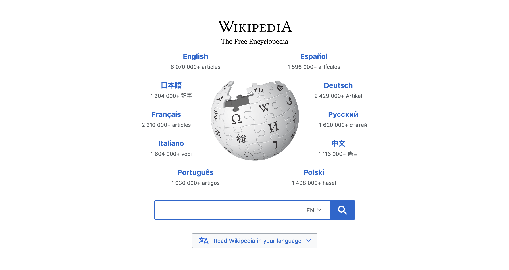

White Space
Wikipedia
Go to Wikipedia
"Wikipedia has designed their site in order to have enough white space. It looks clean and doesn't distract. I also noticed that their logo doesn't complete the full circle. It was one the the design principles in the section, but not one of the nine that we were supposed to write about."
PARC:Repition
Salesforce
Go to Company
"Salesforce has designed their page so that all their services they offer are grouped in little boxes. This helps provide the user with alot of information without overwhelming them. They are adhering to the design principle of repition."
PARC:Contrast
Soundbox Media
Go to Company
"This is the logo of a company that I have recently created. The left side is light and the right side is dark. It adheres to the design principle of contrast. It also gives me some advertising."